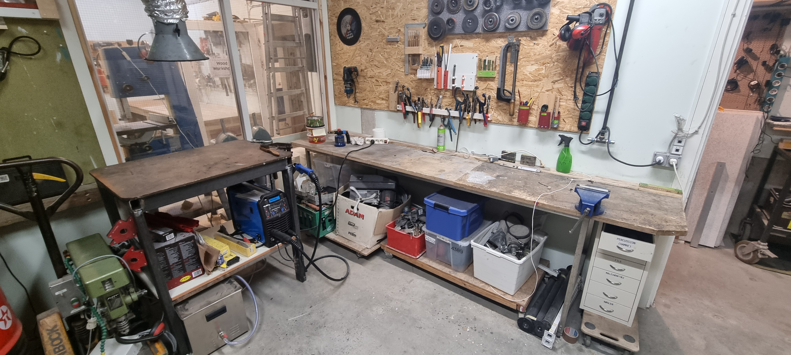
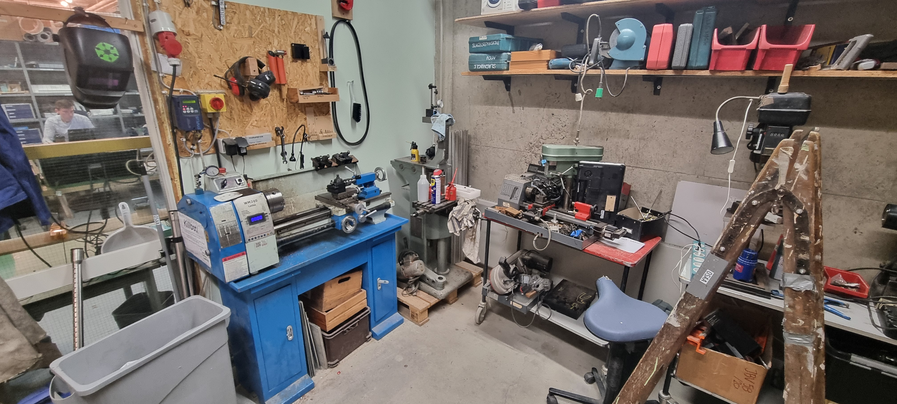

I Open Space Aarhus' metalværksted har du mulighed for at arbejde på dine projekter, som involverer arbejde med metal. I værkstedet finder du:

<ul>
    <li>Arbejdsbord med skruestik</li>
    <li>Svejsebord</li>
    <li>MIG/MAG svejsemaskine</li>
    <li>Metal drejebænk</li>
    <li>Søjlebormaskine</li>
    <li>Metalsav</li>
    <li>Vinkelsliber</li>
    <li>Diverse håndværktøj</li>
</ul>



